このタブを閉じると編集画面に戻れます。
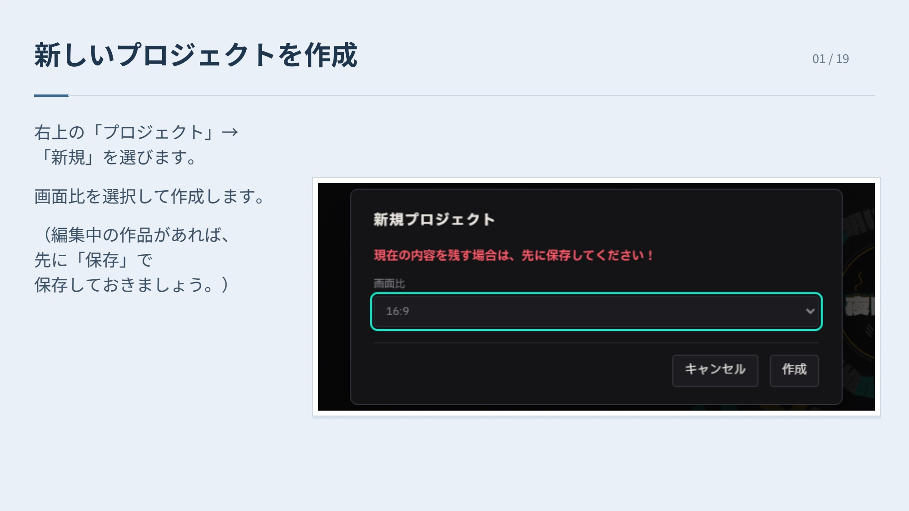
新しいプロジェクトを作成 01 / 19 右上の「プロジェクト」→ 「新規」を選びます。 画面比を選択して作成します。 （編集中の作品があれば、 先に「保存」で 保存しておきましょう。）
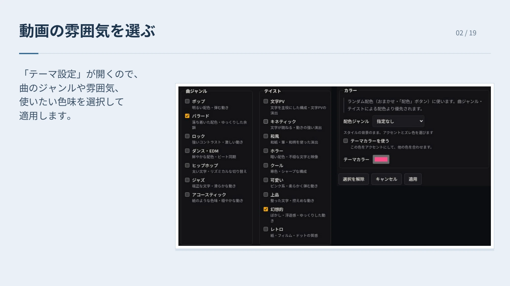
動画の雰囲気を選ぶ 02 / 19 「テーマ設定」が開くので、 曲のジャンルや雰囲気、 使いたい色味を選択して 適用します。
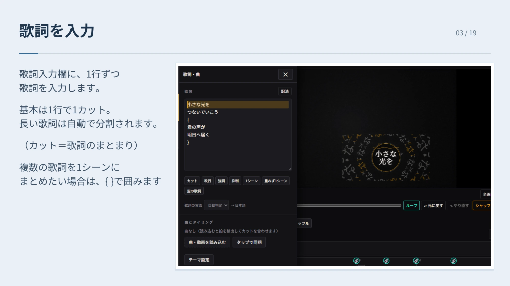
歌詞を入力 03 / 19 歌詞入力欄に、1行ずつ 歌詞を入力します。 基本は1行で1カット。 長い歌詞は自動で分割されます。 （カット＝歌詞のまとまり） 複数の歌詞を1シーンに まとめたい場合は、{ }で囲みます
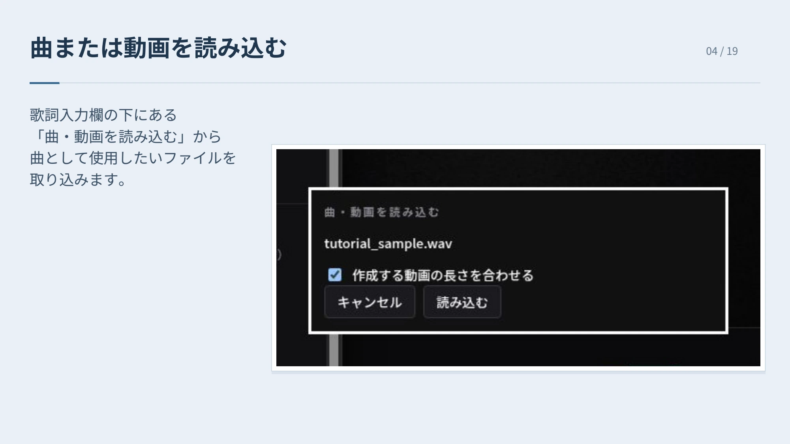
曲または動画を読み込む 04 / 19 歌詞入力欄の下にある 「曲・動画を読み込む」から 曲として使用したいファイルを 取り込みます。
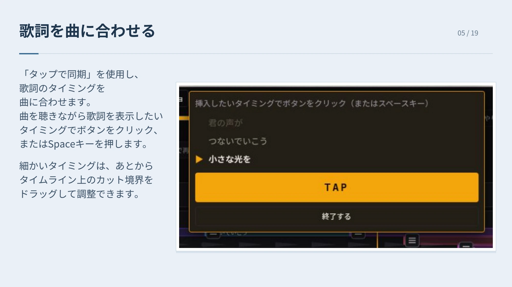
歌詞を曲に合わせる 05 / 19 「タップで同期」を使用し、 歌詞のタイミングを 曲に合わせます。 曲を聴きながら歌詞を表示したい タイミングでボタンをクリック、 またはSpaceキーを押します。 細かいタイミングは、あとから タイムライン上のカット境界を ドラッグして調整できます。
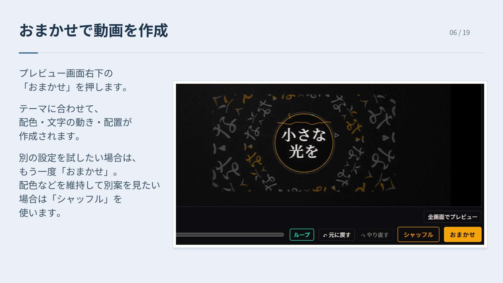
おまかせで動画を作成 06 / 19 プレビュー画面右下の 「おまかせ」を押します。 テーマに合わせて、 配色・文字の動き・配置が 作成されます。 別の設定を試したい場合は、 もう一度「おまかせ」。 配色などを維持して別案を見たい 場合は「シャッフル」を 使います。
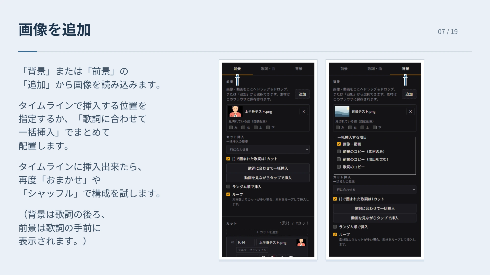
画像を追加 07 / 19 「背景」または「前景」の 「追加」から画像を読み込みます。 タイムラインで挿入する位置を 指定するか、「歌詞に合わせて 一括挿入」でまとめて 配置します。 タイムラインに挿入出来たら、 再度「おまかせ」や 「シャッフル」で構成を試します。 （背景は歌詞の後ろ、 前景は歌詞の手前に 表示されます。）
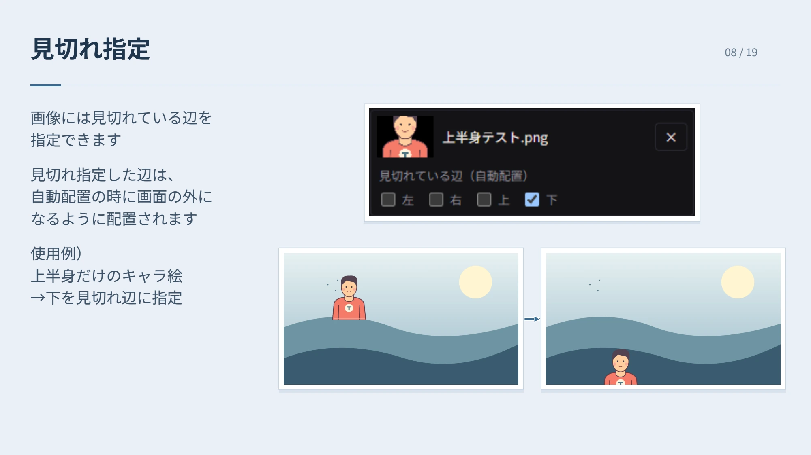
見切れ指定 08 / 19 画像には見切れている辺を 指定できます 見切れ指定した辺は、 自動配置の時に画面の外に なるように配置されます 使用例） 上半身だけのキャラ絵 →下を見切れ辺に指定
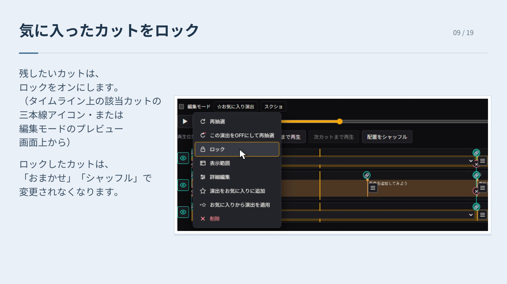
気に入ったカットをロック 09 / 19 残したいカットは、 ロックをオンにします。 （タイムライン上の該当カットの 三本線アイコン・または 編集モードのプレビュー 画面上から） ロックしたカットは、 「おまかせ」「シャッフル」で 変更されなくなります。
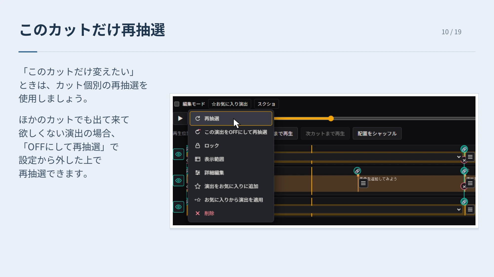
このカットだけ再抽選 10 / 19 「このカットだけ変えたい」 ときは、カット個別の再抽選を 使用しましょう。 ほかのカットでも出て来て 欲しくない演出の場合、 「OFFにして再抽選」で 設定から外した上で 再抽選できます。
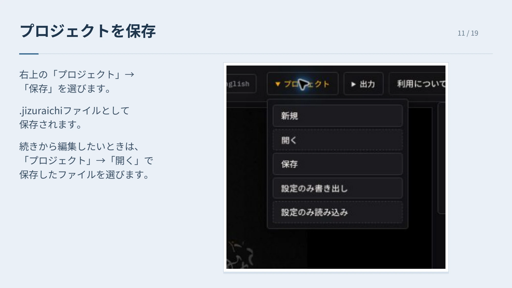
プロジェクトを保存 11 / 19 右上の「プロジェクト」→ 「保存」を選びます。 .jizuraichiファイルとして 保存されます。 続きから編集したいときは、 「プロジェクト」→「開く」で 保存したファイルを選びます。
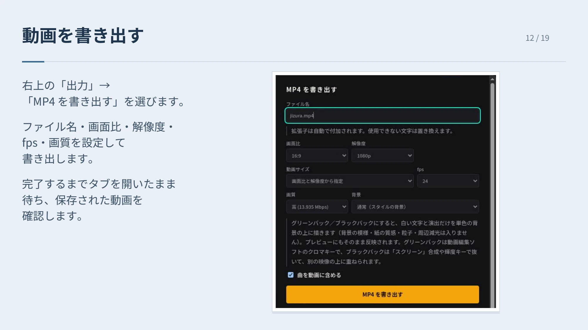
動画を書き出す 12 / 19 右上の「出力」→ 「MP4 を書き出す」を選びます。 ファイル名・画面比・解像度・ fps・画質を設定して 書き出します。 完了するまでタブを開いたまま 待ち、保存された動画を 確認します。
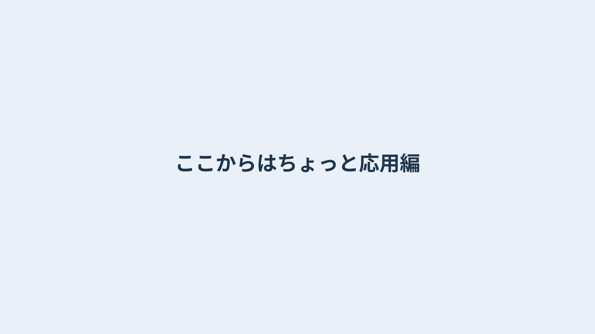
ここからはちょっと応用編
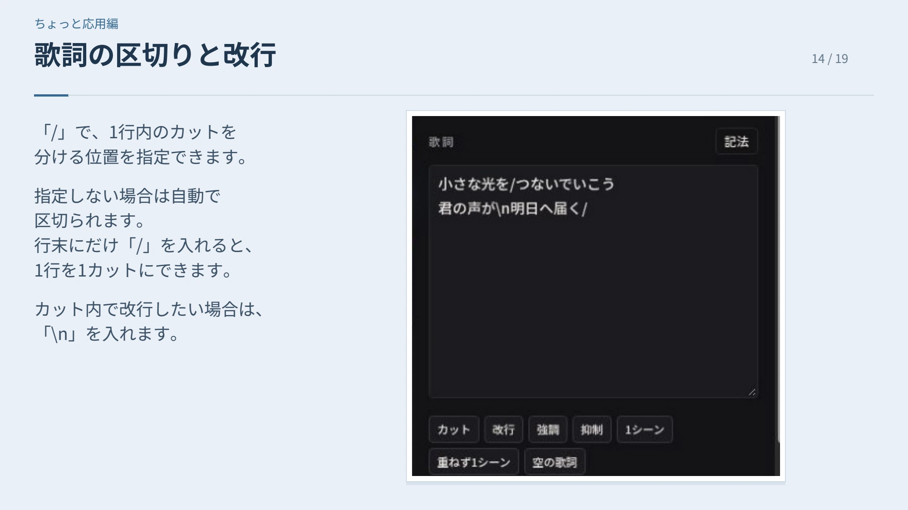
ちょっと応用編 歌詞の区切りと改行 14 / 19 「/」で、1行内のカットを 分ける位置を指定できます。 指定しない場合は自動で 区切られます。 行末にだけ「/」を入れると、 1行を1カットにできます。 カット内で改行したい場合は、 「\n」を入れます。
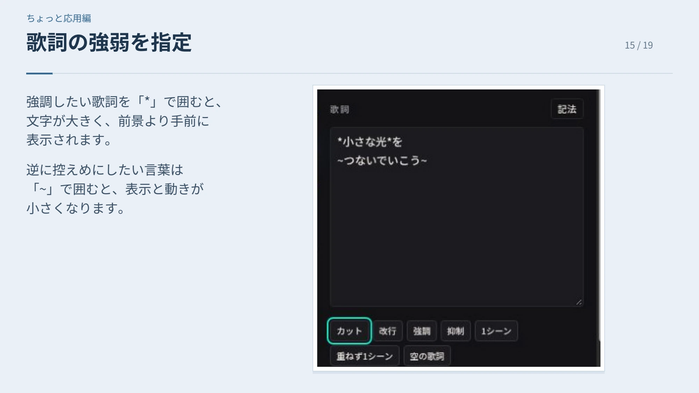
ちょっと応用編 歌詞の強弱を指定 15 / 19 強調したい歌詞を「*」で囲むと、 文字が大きく、前景より手前に 表示されます。 逆に控えめにしたい言葉は 「~」で囲むと、表示と動きが 小さくなります。
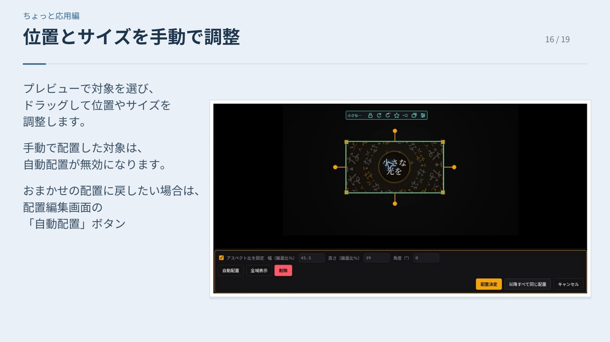
ちょっと応用編 位置とサイズを手動で調整 16 / 19 プレビューで対象を選び、 ドラッグして位置やサイズを 調整します。 手動で配置した対象は、 自動配置が無効になります。 おまかせの配置に戻したい場合は、 配置編集画面の 「自動配置」ボタン
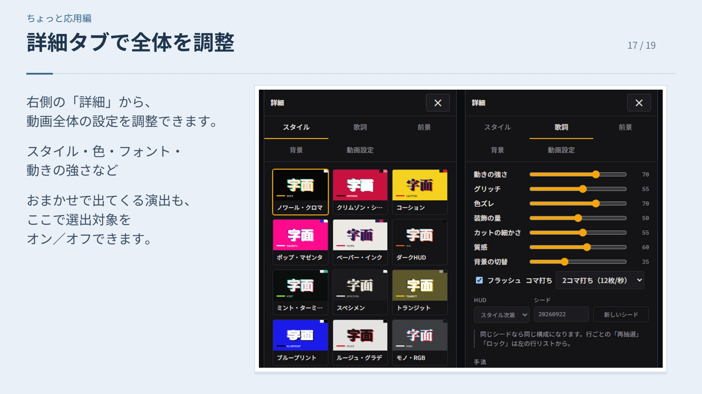
ちょっと応用編 詳細タブで全体を調整 17 / 19 右側の「詳細」から、 動画全体の設定を調整できます。 スタイル・色・フォント・ 動きの強さなど おまかせで出てくる演出も、 ここで選出対象を オン／オフできます。
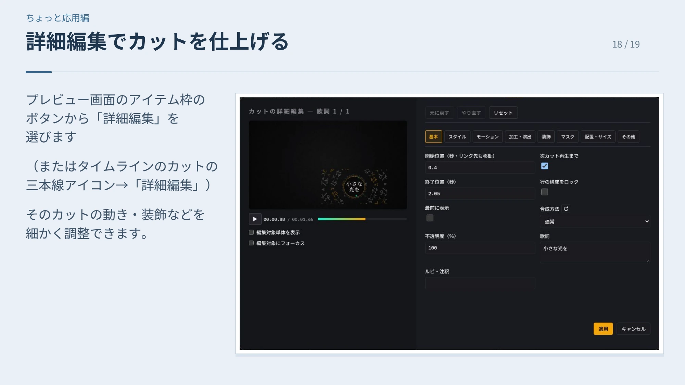
ちょっと応用編 詳細編集でカットを仕上げる 18 / 19 プレビュー画面のアイテム枠の ボタンから「詳細編集」を 選びます （またはタイムラインのカットの 三本線アイコン→「詳細編集」） そのカットの動き・装飾などを 細かく調整できます。
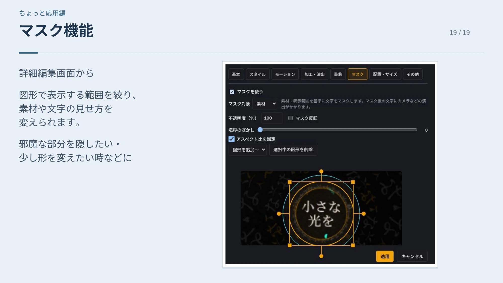
ちょっと応用編 マスク機能 19 / 19 詳細編集画面から 図形で表示する範囲を絞り、 素材や文字の見せ方を 変えられます。 邪魔な部分を隠したい・ 少し形を変えたい時などに